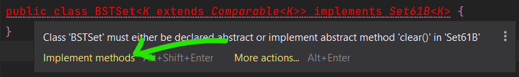
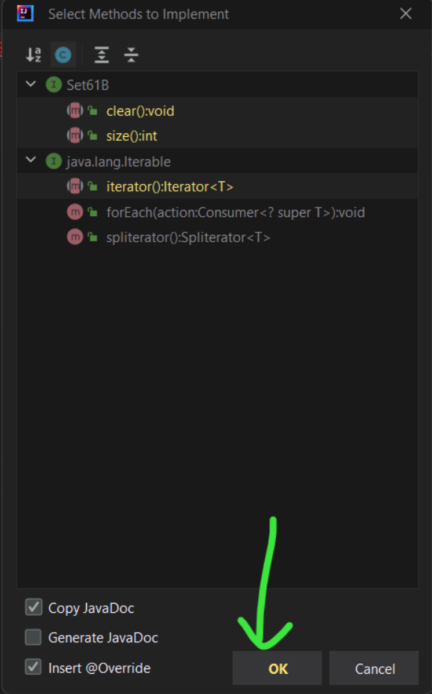

实验 06：BSTMap¶
FAQ¶
Lab 06的常见问题解答在这里。
介绍¶
在本实验中，您将基于二叉搜索树(BST)实现Map61B接口的BSTMap类，构建一个基础的树形映射结构。您需要从零开始完成这个实现，并以提供的接口规范作为开发指南。
完成实施后，您将比较您的实现转换为基于列表的实现以及内置 Java 类（使用称为红黑树的 BST 变体）从骨架代码库拉取
要获取本次作业，请从您的个人代码仓库中拉取skeleton分支：
git pull skeleton main此作业是 。lab06
BSTMap¶
在本次实验（及后续实验）中，我们可能不会像以往那样提供完整的框架代码。如果您在开始实现时遇到困难，请参加实验辅导或查阅相关参考资料！
您需要创建一个使用 二叉搜索树（Binary Search Tree, BST） 作为核心数据结构的类，以实现Map61B接口。在完成类的定义并实现BSTMap中的所有方法前，代码将无法通过编译。您可以采用渐进式实现策略：先定义所有必需方法的签名，对于暂未实现的方法，可暂时抛出UnsupportedOperationException异常占位。具体异常抛出方式请参考相关文档。
在您的实现中，需要确保泛型键类型 K 实现了 Comparable 接口。 这称为有界类型参数。
这个语法有点复杂，但我们已在下方提供了示例。这里我们创建了一个针对可比较对象的BSTSet。出于教学目的，我们特意加入了compareRoots和compareTo等概念。（如需复习，请参阅此文档）
public class BSTSet<K extends Comparable<K>> implements Set61B<K> {
private class BSTNode {
K item;
// ...
}
private BSTNode root;
/*
* 比较当前 BSTSet 的根节点与另一个 BSTSet 的根节点的大小关系，
* 返回值遵循 `compareTo` 方法的标准约定：
* - 负数：当前 BSTSet 的根节点小于另一个 BSTSet 的根节点
* - 零：两个 BSTSet 的根节点相等
* - 正数：当前 BSTSet 的根节点大于另一个 BSTSet 的根节点
*/
public int compareRoots(BSTSet other) {
/*
* 我们可以安全地对 `n1.item` 调用 `compareTo` 方法，
* 因为泛型类型 `K` 被声明为 `extends Comparable<K>`，
* 这意味着 `K` 必须实现 `Comparable` 接口，
* 而所有实现 `Comparable` 的类都必须定义 `compareTo` 方法。
*/
return this.root.item.compareTo(other.root.item);
}
// ...
}Info
您可能已经注意到，有界类型参数的语法使用了 extends 关键字，尽管 Comparable 是一个 接口。在有界类型参数的上下文中，extends 可以表示 继承自类 或 实现接口（官方文档）。不要问我们为什么 ——Java 设计者也没解释过。
（这种语法还暗示您可以 “扩展” 像 Integer 这样的 final 类，但这显然是不可能的。欢迎来到神奇的 Java 世界！）
Warning
请记住，上面的代码片段模拟的是一个 集合（Set），而你需要实现的是一个 映射（Map）。我们建议你在实现 BSTMap 时采用类似的逻辑，但需要创建一个嵌套的节点类来存储键值对。
你的 BSTMap 应该包含两个泛型参数 K 和 V，分别代表映射中键和值的类型：
IntelliJ 有一个很好的功能，可以为你生成方法签名。如果你正在实现一个接口，但尚未实现所有方法，IntelliJ 会将类签名标为红色。如果你将鼠标悬停在上面，应该可以选择 “Implement methods”（实现方法）。在弹出的窗口中，确保你选中了 “Copy JavaDoc”（复制 Java 文档）和 “Insert @Override”（插入 @Override 注解）选项。点击 “OK”，IntelliJ 就会在类中填充所需的方法签名（不过这些方法还无法正常工作！），并复制相关注释。
生成后的代码大概会是这个样子（你没有 Set61B，这只是一个示例！）：  
练习：实现 BSTMap¶
如前所述，你需要创建一个名为BSTMap的类来实现Map61B 接口。请确保将实现代码写在 BSTMap.java 文件中，否则自动评分系统可能无法运行你的代码！需要实现的方法包括：
-
void put(K key, V value): 将指定的键与值关联。若键已存在，更新其对应的值。 -
V get(K key) : 返回指定键所映射的值；若键不存在，返回null。 -
boolean containsKey(K key) : 判断此映射是否包含指定键的映射关系。 -
int size() : 返回此映射中的键值对数量。 -
void clear(): 移除映射中的所有键值对。
请务必阅读Map61B接口中每个方法的注释，以充分理解具体实现要求。上述描述未必涵盖所有细节。
为了便于调试，你的BSTMap还应包含一个额外的方法printInOrder()（该方法无需在Map61B接口中声明），该方法按键的升序打印BSTMap 中的所有键值对。我们不会测试此方法的输出结果，但它会帮助你验证自己的实现！
Task
请实现BSTMap类，该类需实现Map61B接口及其所有必需方法。通过使用有界类型参数，确保BSTMap中的键是可比较的。
我们强烈建议你创建辅助方法来简化实现（特别是递归辅助方法）。
Info
很遗憾，你需要实现的大多数方法在测试时都依赖于其他方法（例如get方法依赖于put方法）。这意味着在实现put方法之前，很难对其他方法进行有效测试。我们建议你按照 Map61B 接口中指定的顺序实现这些方法。
你可以使用TestBSTMap.java来测试你的实现。
参考资源¶
以下资源可能会有所帮助：
- 2024 年秋季学期，第 16 讲 幻灯片.。
ULLMap.java（位于src/ 目录下），一个基于无序链表的Map61B实现。- 为了帮助你入门， 这里有一份关于
put和get方法的算法指南。
那么…… 它的速度有多快呢？¶
在 InsertRandomSpeedTest.java中提供了一个交互式速度测试。在完成 BSTMap的实现之前，不要尝试运行这个测试。准备就绪后，你可以在 IntelliJ 中运行这些测试。
InsertRandomSpeedTest 类会测试你的 BSTMap、ULLMap（已提供）、Java 内置的 TreeMap 以及 Java 内置的 HashMap（你将在后续实验中深入了解）的元素插入速度。测试流程是：询问用户要插入的每个字符串的长度，以及输入规模（要执行的插入操作次数）。然后生成指定数量、指定长度的字符串，并将它们作为 <String, Integer> 键值对插入到各个映射中。
试试看，对比你的数据结构与朴素实现、工业级实现，看看随着插入次数的增加，性能表现如何变化。记住，在小样本上，渐进复杂度并不能体现出来，所以如果得到的趋势令人困惑，要确保输入足够大（但要注意，这里有个限制 —— 如果输入的值太大，程序可能会溢出，所以可以尝试用足够大但合适的值进行测试）。将你的测试结果记录在名为 speedTestResults.txt 的文件中。
Task
运行速度测试并将结果记录在 speedTestResults.txt中。结果格式不做强制要求，但至少应包含你执行的操作和观察到的现象。
评分标准¶
本实验满分为 5 分。Gradescope 上没有隐藏测试，即你在 Gradescope 上获得的分数就是最终分数。不过，有一项测试不会在本地提供，该测试会检查你的speedTestResults.txt文件。通过本地测试TestBSTMap.java意味着你的BSTMap.java能获得满分，但这并不保证你在 Gradescope 上的speedTestResults.txt也能得分。因此，对于本次实验，只要你通过了相关的本地测试（TestBSTMap.java）并充分填写了speedTestResults.txt文件，就能在 Gradescope 上获得满分。
BSTMap 的更多（不计分）练习¶
这些练习不会被评分，但你仍可通过本地测试（特别是TestBSTMapExtra.java）和自动评分器获得反馈。
在你的BSTMap类中实现以下方法：iterator()：返回一个按升序遍历键的迭代器。keySet()：返回所有键的集合。remove(K key)：删除指定键对应的键值对。
实现remove()方法颇具挑战性，你需要实现 Hibbard 删除算法。如果指定的键不存在于BSTMap中，remove()方法应返回null；否则，删除该键值对并返回被删除的值。
可选：渐进复杂度问题¶
这部分内容同样为可选内容，我们纳入它是为了让你针对渐进复杂度进行更多练习。可对照 答案来检查你的解答！
已知有一个名为 B 的 BSTMap（二叉搜索树映射），其中包含 N 个键值对，还有一个随机的键值对 (K, V)，请回答以下问题。
除非另有说明，“big-Oh”（如 O(N)）和 “big-Theta”（如 Θ(N)）均针对给定方法调用过程中比较操作的次数而言。
对于问题 1-7，判断陈述为 “正确” 还是 “错误”。对于问题 8，给出运行时复杂度界。
B.put(K, V) ∈ O(log N)B.put(K, V) ∈ Θ(log N)B.put(K, V) ∈ Θ(N)B.put(K, V) ∈ O(N)B.put(K, V) ∈ O(N²)- 对于一个与
K不相等的固定键C，B.containsKey(C)和B.containsKey(K)的运行时复杂度均满足Ω(log N)。 - （本题难度较高）设
b是BSTMap的一个Node（节点），以root为根的两棵子树分别记为left（左子树）和right（右子树）。进一步假设，方法numberOfNodes(Node p)会返回以p为根的子树的节点数量（记为M），且其运行时复杂度为Θ(M)。若1 <= z < numberOfNodes(b.root)，那么mystery(b.root, z)在最坏情况和最佳情况下的运行时复杂度分别是多少？
提示：先试着弄清楚 mystery 方法的功能，再分析它是如何实现该功能的。
public Key mystery(Node b, int z) {
int numLeft = numberOfNodes(b.left);
if (numLeft == z - 1) {
return b.key;
} else if (numLeft > z) {
return mystery(b.left, z);
} else {
return mystery(b.right, z - numLeft - 1);
}
}